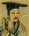

黄帝 Võng Äi Huángdì
(軒轅 Hëin Yõn Xuānyuán)
ascended the throne in 2697 BCE

少昊 Sēl Hào Shǎohào
(玄囂 Yõn Hël Xuánxiāo)
ascended the throne in 2597 BCE
昌意
Chëng Yï
Chāngyì
橋極
Kẽl Gèik
Qiáojí

顓頊 Jön Gūk Zhuānxū
ascended the throne in 2513 BCE

帝嚳 Äi Gūk Dìkù
ascended the throne in 2435 BCE
Kũng Chên
Qióngchán
Gūn
Gǔn
帝摯 Äi Jï Dìzhì
ascended the throne in 2365 BCE

堯帝 Ngẽl Äi Yáodì
ascended the throne in 2356 BCE
Gëin Höng
Jìngkāng

禹 Yî Yǔ
ascended the throne in 2205 BCE
Guï Mòng Jùwàng
Kẽl Ngẽo Qiáoniú
Gū Säo Gǔsǒu
Sün Shùn
ascended the throne in 2255 BCE
Dèng Xiàng